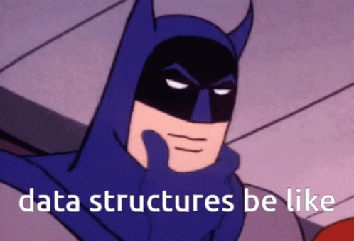

Code
library(dplyr)
library(ggplot2)
library(tidyr)
library(scales)
library(readr)
library(readxl)
library(ggthemes)
library(forcats)
library(jsonlite)
library(dplyr)
library(ggplot2)
library(tidyr)
library(scales)
library(readr)
library(readxl)
library(ggthemes)
library(forcats)
library(jsonlite)1)my_data2
2)my_data3
3)my_data4
4)my_data8
This data is used for detecting global electric vehicle sales by country and across the world.
To download this data, the following codes are used.
# The following code is used to download the data from excel. Necessary
# adaptions must be made according to your local computer.
# my_data2 <- read_csv("C:/files/my_data2.csv")
head(my_data2, 10)# A tibble: 10 × 8
region category parameter mode powertrain year unit value
<chr> <chr> <chr> <chr> <chr> <dbl> <chr> <dbl>
1 Australia Historical EV stock share Cars EV 2011 percent 3.90e-4
2 Australia Historical EV sales share Cars EV 2011 percent 6.50e-3
3 Australia Historical EV sales Cars BEV 2011 Vehicles 4.9 e+1
4 Australia Historical EV stock Cars BEV 2011 Vehicles 4.9 e+1
5 Australia Historical EV stock Cars BEV 2012 Vehicles 2.2 e+2
6 Australia Historical EV sales Cars BEV 2012 Vehicles 1.7 e+2
7 Australia Historical EV sales share Cars EV 2012 percent 3.00e-2
8 Australia Historical EV stock share Cars EV 2012 percent 2.40e-3
9 Australia Historical EV stock Cars PHEV 2012 Vehicles 8 e+1
10 Australia Historical EV sales Cars PHEV 2012 Vehicles 8 e+1This data is used to determine vehicle-related CO2 emissions globally and by country.
To download this data, the following codes are used.
# Fetch the data
my_data3 <- read.csv("https://ourworldindata.org/grapher/co2-emissions-transport.csv?v=1&csvType=full&useColumnShortNames=true")
# Fetch the metadata
metadata <- fromJSON("https://ourworldindata.org/grapher/co2-emissions-transport.metadata.json?v=1&csvType=full&useColumnShortNames=true")
head(my_data3, 10) Entity Code Year transport_co2_emissions
1 Afghanistan AFG 1990 970000
2 Afghanistan AFG 1991 930000
3 Afghanistan AFG 1992 740000
4 Afghanistan AFG 1993 740000
5 Afghanistan AFG 1994 730000
6 Afghanistan AFG 1995 730000
7 Afghanistan AFG 1996 700000
8 Afghanistan AFG 1997 670000
9 Afghanistan AFG 1998 670000
10 Afghanistan AFG 1999 490000This data is used to analyse Turkiye’s status about EVs.
To download this data, the following codes are used.
# The following code is used to download the data from excel. Necessary
# adaptions must be made according to your local computer.
# my_data4 <- read_excel("C:/files/my_data4.xls",sheet = 1)
head(my_data4, 10)# A tibble: 10 × 15
Yıl Toplam ...3 Benzin ...5 Dizel ...7 LPG ...9 `Hibrit (2)` ...11
<chr> <chr> <chr> <chr> <chr> <chr> <chr> <chr> <chr> <chr> <chr>
1 Year Total (%) Gasol… (%) Dies… (%) LPG (%) Hybrid (2) (%)
2 2004 5400440 100 40624… 75.2… 2526… 4.67… 7930… 14.6… - -
3 2005 5772745 100.00… 38831… 67.2… 3946… 6.83… 1259… 21.8… - -
4 2006 6140992 100 38385… 62.5… 5837… 9.50… 1522… 24.7… - -
5 2007 6472156 100 37149… 57.3… 7639… 11.8… 1826… 28.2… - -
6 2008 6796624 99.999… 35317… 51.9… 9477… 13.9… 2214… 32.5… - -
7 2009 7093964 100.00… 33738… 47.5… 1111… 15.6… 2525… 35.5… - -
8 2010 7544862 99.999… 31919… 42.3… 1381… 18.3… 2900… 38.4… - -
9 2011 8113111 100 30361… 37.4… 1756… 21.6… 3259… 40.1… 23 0.00…
10 2012 8648875 100 29292… 33.8… 2101… 24.2… 3569… 41.2… 53 0.00…
# ℹ 4 more variables: Elektrik <chr>, ...13 <chr>, `Bilinmeyen (3)` <chr>,
# ...15 <chr>This data is used to determine transportation CO2 emissions per person for each country.
To download this data, the following codes are used.
# The following code is used to download the data from excel. Necessary
# adaptions must be made according to your local computer.
# my_data8 <- read_csv("C:/files/my_data8.csv")
head(my_data8, 10) Entity Year Population...Sex..all...Age..all...Variant..estimates
1 Afghanistan 1950 7776182
2 Afghanistan 1951 7879343
3 Afghanistan 1952 7987783
4 Afghanistan 1953 8096703
5 Afghanistan 1954 8207953
6 Afghanistan 1955 8326981
7 Afghanistan 1956 8454302
8 Afghanistan 1957 8588340
9 Afghanistan 1958 8723412
10 Afghanistan 1959 8869271Before starting the analysis, let’s make the columns more understandable. Note that the time frame between 2011 and 2021 will be used in the analysis.
my_data2 <- my_data2 |>
filter(year %in% 2011:2021)
head(my_data2, 10)# A tibble: 10 × 8
region category parameter mode powertrain year unit value
<chr> <chr> <chr> <chr> <chr> <dbl> <chr> <dbl>
1 Australia Historical EV stock share Cars EV 2011 percent 3.90e-4
2 Australia Historical EV sales share Cars EV 2011 percent 6.50e-3
3 Australia Historical EV sales Cars BEV 2011 Vehicles 4.9 e+1
4 Australia Historical EV stock Cars BEV 2011 Vehicles 4.9 e+1
5 Australia Historical EV stock Cars BEV 2012 Vehicles 2.2 e+2
6 Australia Historical EV sales Cars BEV 2012 Vehicles 1.7 e+2
7 Australia Historical EV sales share Cars EV 2012 percent 3.00e-2
8 Australia Historical EV stock share Cars EV 2012 percent 2.40e-3
9 Australia Historical EV stock Cars PHEV 2012 Vehicles 8 e+1
10 Australia Historical EV sales Cars PHEV 2012 Vehicles 8 e+1There was no need to rename the columns of my_data2.
my_data3 <- my_data3 |>
rename(entity = Entity,
code = Code,
year = Year
) |>
filter(year %in% 2011:2021)
head(my_data3, 10) entity code year transport_co2_emissions
1 Afghanistan AFG 2011 6710000
2 Afghanistan AFG 2012 5850000
3 Afghanistan AFG 2013 4330000
4 Afghanistan AFG 2014 3530000
5 Afghanistan AFG 2015 4300000
6 Afghanistan AFG 2016 3310000
7 Afghanistan AFG 2017 3940000
8 Afghanistan AFG 2018 4410000
9 Afghanistan AFG 2019 4550000
10 Afghanistan AFG 2020 5070000my_data4 <- my_data4 |>
rename(year = Yıl,
total = Toplam,
gas = Benzin,
diesel = Dizel,
lpg = LPG,
hybrid = `Hibrit (2)`,
electric = Elektrik,
unknown = `Bilinmeyen (3)`
) |>
rename(percentage_total = ...3,
percentage_gas = ...5,
percentage_diesel = ...7,
percentage_lpg = ...9,
percentage_hybrid = ...11,
percentage_electric = ...13,
percentage_unknown = ...15
) |>
filter(year %in% 2011:2021)
head(my_data4, 10)# A tibble: 10 × 15
year total percentage_total gas percentage_gas diesel percentage_diesel
<chr> <chr> <chr> <chr> <chr> <chr> <chr>
1 2011 8113111 100 3036… 37.4225004440… 17560… 21.6443975683310…
2 2012 8648875 100 2929… 33.8681736063… 21012… 24.2945585408506…
3 2013 9283923 100.00000000000… 2888… 31.1141098434… 24972… 26.8982088714005…
4 2014 9857915 100.00000000000… 2855… 28.9622907075… 28828… 29.2443686114152…
5 2015 10589337 100 2927… 27.6478121340… 33459… 31.5973606279599…
6 2016 11317998 100.00000000000… 3031… 26.7869282182… 38037… 33.6081699254585…
7 2017 12035978 100 3120… 25.9256622104… 42563… 35.3631836149916…
8 2018 12398190 100 3089… 24.9199762223… 45686… 36.8494514118593…
9 2019 12503049 99.999999999999… 3020… 24.1542442967… 47697… 38.1484068406034…
10 2020 13099041 100.00000000000… 3201… 24.4437283614… 50143… 38.2803290714182…
# ℹ 8 more variables: lpg <chr>, percentage_lpg <chr>, hybrid <chr>,
# percentage_hybrid <chr>, electric <chr>, percentage_electric <chr>,
# unknown <chr>, percentage_unknown <chr>my_data8 <- my_data8 |>
rename(entity = Entity,
year = Year,
population = Population...Sex..all...Age..all...Variant..estimates
) |>
filter(year %in% 2011:2021)
head(my_data8, 10) entity year population
1 Afghanistan 2011 29347709
2 Afghanistan 2012 30560036
3 Afghanistan 2013 31622708
4 Afghanistan 2014 32792527
5 Afghanistan 2015 33831765
6 Afghanistan 2016 34700614
7 Afghanistan 2017 35688942
8 Afghanistan 2018 36743040
9 Afghanistan 2019 37856126
10 Afghanistan 2020 39068978